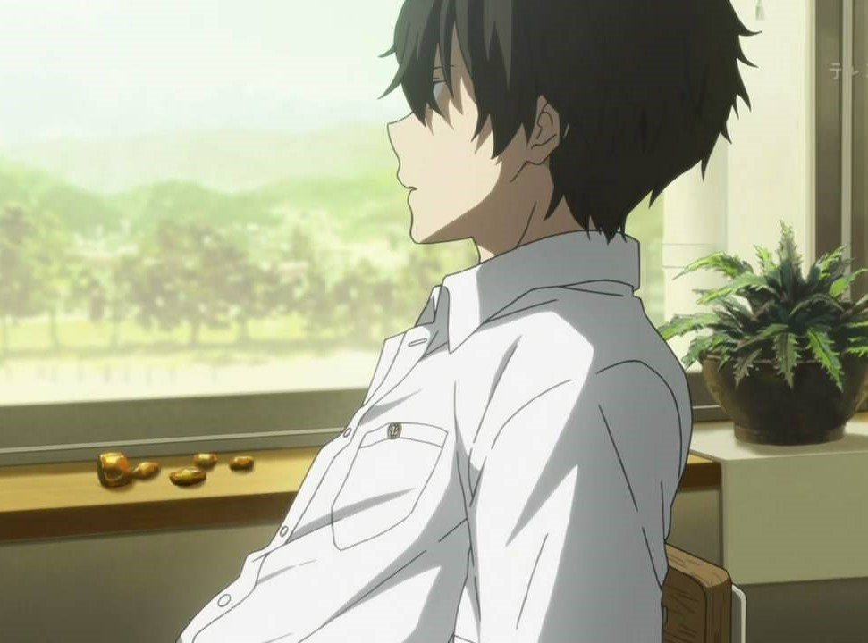

Hyouka
Ice-cream
Little birds can remember. Why didn't she ask EBA?
200
22
hyouka
hyoukahyouka
角色
折木奉太郎：人生信条是“不做也行的事情就不做，非做不可的事情一切从简”，节能主义者。千反田爱瑠：个性认真，披肩黑发，外表清秀，说话全部都用敬语，对于感兴趣的事情或是自己不能理解的事情，都会说“我很好奇”。福部里志：擅长杂学，自认为数据库。伊原摩耶花：个子很矮，长着一张娃娃脸,但性格与外表很不相符很厉害，无论什么事情都不妥协。
剧情
以节能为座右铭的高中生折木奉太郎， 为一个小小的原因而加入了濒临废社的“古典文学部”。 古典文学部的社员，包括他在社里认识的好奇宝宝，也就是女主角千反田爱瑠，还有他从国中就认识的伊原摩耶花和福部里志。 这是他们四人以神山高中为舞台，对一桩桩事件展开推理的青春学园推理剧。 “我很好奇！”奉太郎平静的灰色高中生活，因为千反田的这一句话而为之一变！
CV
主角配音演员
- 折木奉太郎--中村悠一
- 千反田爱瑠--佐藤聪美
- 福部里志----阪口大助
- 伊原摩耶花--茅野爱衣
Welcome to KANYA FESTA
欢迎来到KANYA祭!
神山高中的文化祭“KANYA祭”，在学生会长的开幕致词后终于正式拉开序幕。原本应该是热闹开心的文化祭，但古籍社的四位成员不知为何却个个愁眉不展。原来是社刊不小心印得太多，30本变成了200本……黄昏现白骨 为了销出不小心印太多的社刊，古籍社成员纷纷开始想办法。千反田到处奔走看有没有社团愿意帮忙，里志则参加了猜谜大赛，然而摩耶花和河内学姐在漫研社起了冲突……WILD FIRE 为了宣传社刊《冰菓》，除了留守的奉太郎外，古籍社其他三位成员都参加了烹饪研究社举办的烹饪比赛“WILD FIRE”。第二棒千反田的手艺绝佳，却因为做得兴起几乎把食材都用光了，令下一棒摩耶花陷入了困境……
十文字事件 在KANYA祭中，参加的社团纷纷遗失了东西，并且都在现场发现了以“十文字”署名的犯案声明。由于全校都对这位怪盗十文字产生了兴趣，古籍社便想说藉由找出怪盗身分，来打响知名度以推销社刊……最後的目标 由于根据怪盗十文字的犯案逻辑，古籍社很可能便是他的下一个作案目标，这使得古籍社有机会让社长千反田接受午休时间的校内广播访问，加上壁报社的推波助澜帮忙宣传，顿时古籍社成了大家注目的焦点……
库特利亚芙卡的顺序 就在众目睽睽之下，古籍社还是遭到了怪盗十文字的毒手，被偷走了目标物，社刊的校毕原稿。古籍社看似落败，但也达到了目的，社刊因此销售一空。而且实际上，奉太郎也已经掌握了怪盗的真面目……
冰菓Summer Festival
- OP-----------------------------优しさの理由
- ED-----------------------------まどろみの约束
- OP2----------------------------未完成ストライド
KA KI
KU KE KO
kotennbu kotennbu kotennbu
kotennbu
我很好奇 我很好奇 我很好奇 我很好奇 我很好奇 我很好奇 我很好奇 我很好奇 我很好奇 我很好奇 我很好奇 我很好奇
”